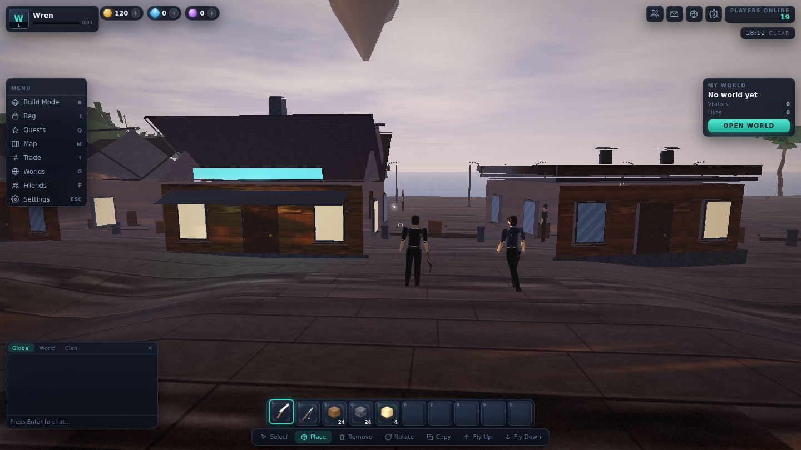
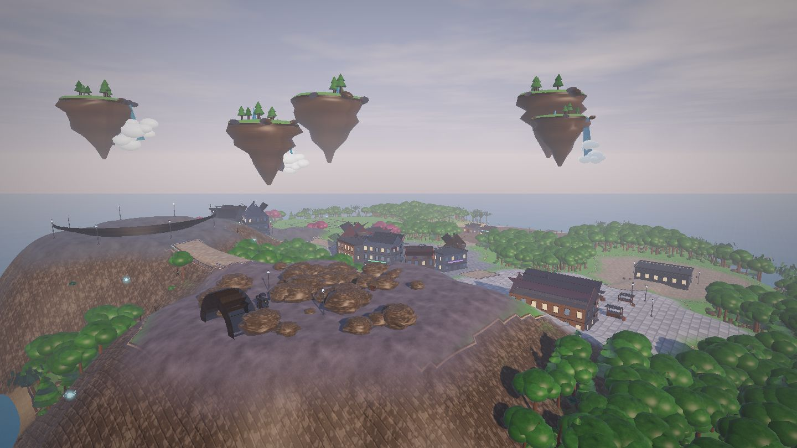
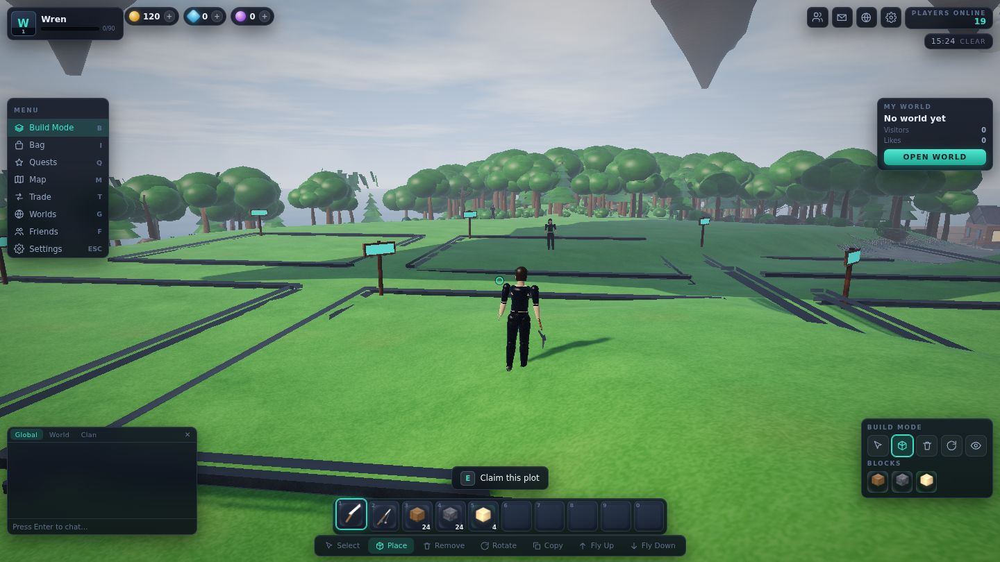

A 3D social sandbox built around one question: what will you make that is worth someone else's visit? Mine it, build it, fish it, fight for it, trade it — then open the gate.
Runs in any WebGL2 browser. One file, no install, no download.
Lumen Harbor is generated at load — terrain, buildings, props, textures, characters, music. Nine districts ring one plaza: a market, a working waterfront, a quarry, an arena, a garage, a mission hall, and a row of empty plots waiting for someone to take them.
The fountain, the portal home, the notice board, and the people standing around them. Every road on the island runs back here.
Twelve floating islands hang over the harbour, eroded rock under grass, some of them pouring water into open air.
One clock drives the sun, the sky, the fog and the lamps. Street lights fade up as the sun drops, and shop signs light the pavement.



A one-metre voxel layer with select, place, remove, rotate and copy — and flight, so you can build something taller than you are.
A two-sided window with locks, value totals and an edit that clears both locks — the scam pattern closed by design, not by warning text.
Mine six ore tiers, fish a minigame the client cannot read the answer to, and clear six species of enemy on one shared AI.
A private world that is yours, with permissions, visitor counts, and a gate you decide to open.
Press B and the world changes shape around you: a tool row, a block palette, a longer reach, and a ghost cursor snapped to the cell the ray actually hits.
Not a roadmap. These are the systems running in the file you can open.
WebGL2 from scratch: shadow pass, analytic sky, height fog, water, bloom, sun shafts, sixteen point lights per frame.
Nineteen bones, seventeen clips written as functions of phase, crossfaded by a priority state machine.
Every economic action goes through a request handler with a private server context. The client never decides what it owns.
Private realms share the public island's generator, chunking, lighting and collision — a smaller place, not a lesser one.
Levels, skills, daily and weekly missions, a story chain, achievements, titles and collections.
Soft and premium currency, shops, crafting, and a trade flow that refuses edits while locked. No stat is for sale.
One action map behind keyboard, mouse, touch and pad, so the phone build is the same game and not a cut-down one.
Synthesised audio — no samples — with a generative pad that follows the time of day.
Lumen Harbor is a single-player prototype with a simulated crowd. The other people in the harbour, their chatter and their trades are local fiction — there is no server behind them yet. The game says so in its own second line of chat, and it is said here too.
What that fiction is built on is not fake, though. The authority boundary is real: currency, inventory, damage, ownership, trade results and XP are all decided behind a request handler that the page cannot reach into. When a server does arrive, it replaces one module — not the game.
One file. Loads in a few seconds. Nothing to install and nothing to sign up for.